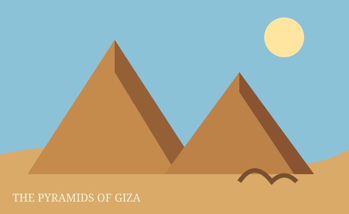

The Famous Pyramids of Egypt

The pyramids of Egypt are among the best-known monuments of the ancient world. Many were built as royal tombs and show the planning, organization and engineering skills of ancient Egyptian builders.
The Giza pyramid complex includes three major pyramids associated with the pharaohs Khufu, Khafre and Menkaure. The Great Pyramid was built for Khufu and is the largest of the three.
The Great Sphinx
Near the pyramids stands the Great Sphinx, a monumental sculpture with a lion's body and a human head. It is commonly associated with the Giza complex and is one of Egypt's most recognizable landmarks.
Why are they important?
- They reveal ancient building techniques.
- They provide evidence about royal burial customs.
- They are important archaeological and cultural sites.